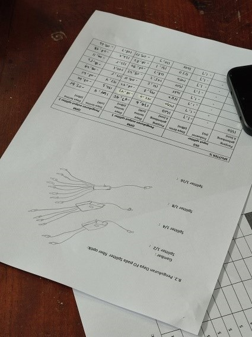
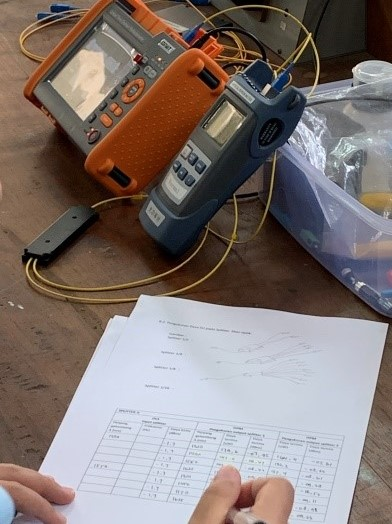
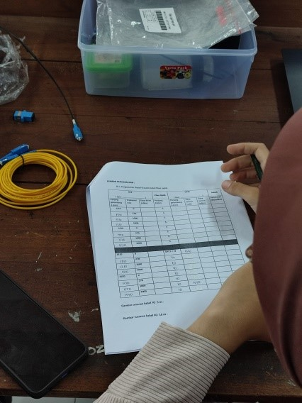
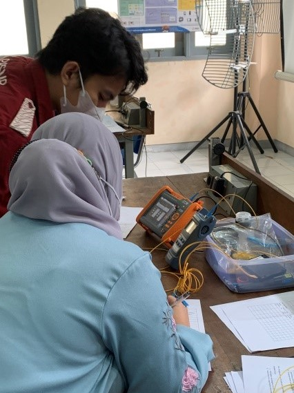
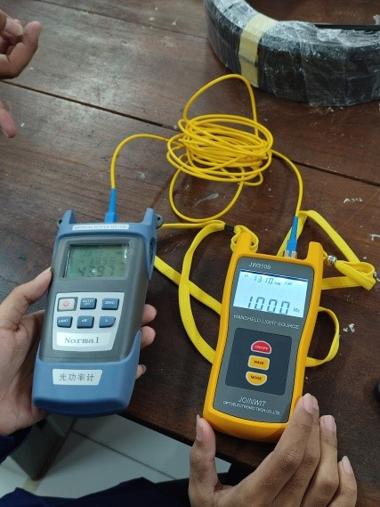
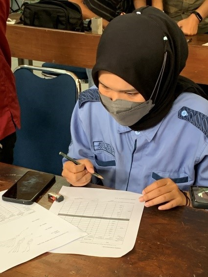

LAB TELEKOMUNIKASI

Pada hari Senin, 12 September 2022 kunjungan ke Lab Bengkel Elektrik. Pada hari Selasa, 6 September 2022, para mahasiswa Teknik Elektro dan Informatika Sekolah Vokasi UGM melakukan praktikum di Lab Telekomunikasi. Disana para mahasiswa mempelajari materi “Pengukuran Daya Sinar Pada Fiber Optik.”
Tentang LAB Telekomunikasi : Kegiatan yang dicakup adalah sebagai tempat untuk mengembangkan daya cipta dan karya peserta didik, sehingga menghasilkan karya yang dapat bermanfaat, baik bagi peserta didik, prodi ataupun khalayak umum.
Sumber Sinar OLS :
OLS merupakan alat pengirim sinar. Alat ini digunakan untuk mengukur kekuatan sebuah optik sinyal untuk menguji daya rata-rata di serat optik sistem. OLS memiliki stabilitas yang tinggi dari daya output dan memiliki hasil panjang gelombang yang stabil.
Power Meter OPM :
Power meter merupakan alat untuk mengukur besaran-besaran listrik secara terintegrasi dari beberapa komponen alat ukur menjadi satu kesatuan yang terangkai dalam suatu alat ukur.
Optical Time Domain Reflectometer (OTDR) :
OTDR adalah alat untuk membaca/mengukur karakteristik kabel optik.
Dokumentasi :
     Gedung TILC, Blimbing Sari, Caturtunggal
Depok Sleman Yogyakarta, Indonesia. 55281